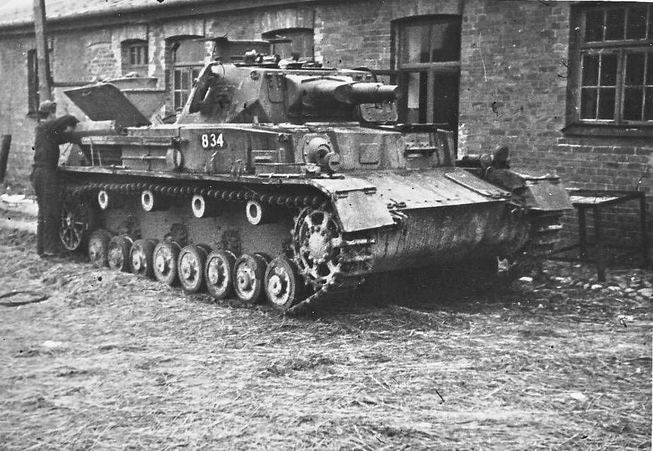
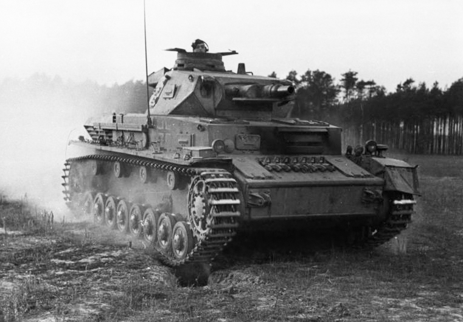
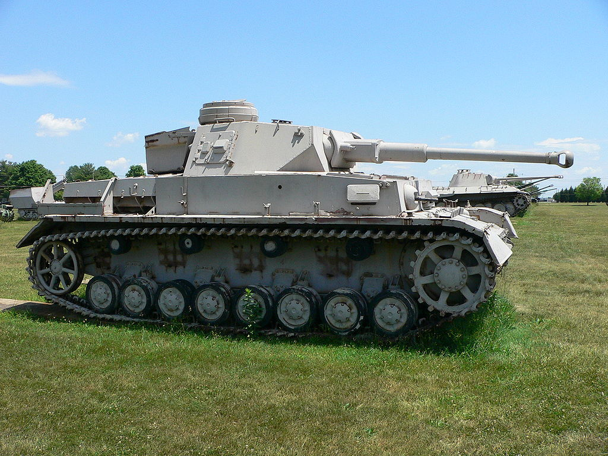
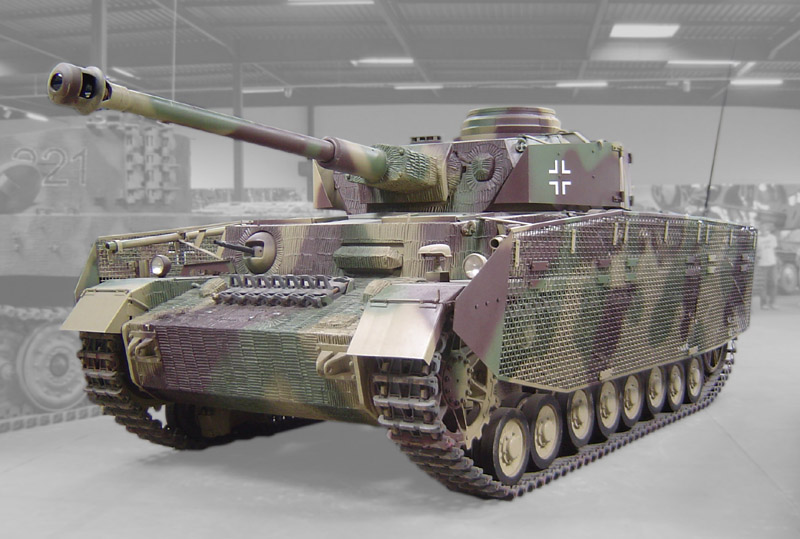
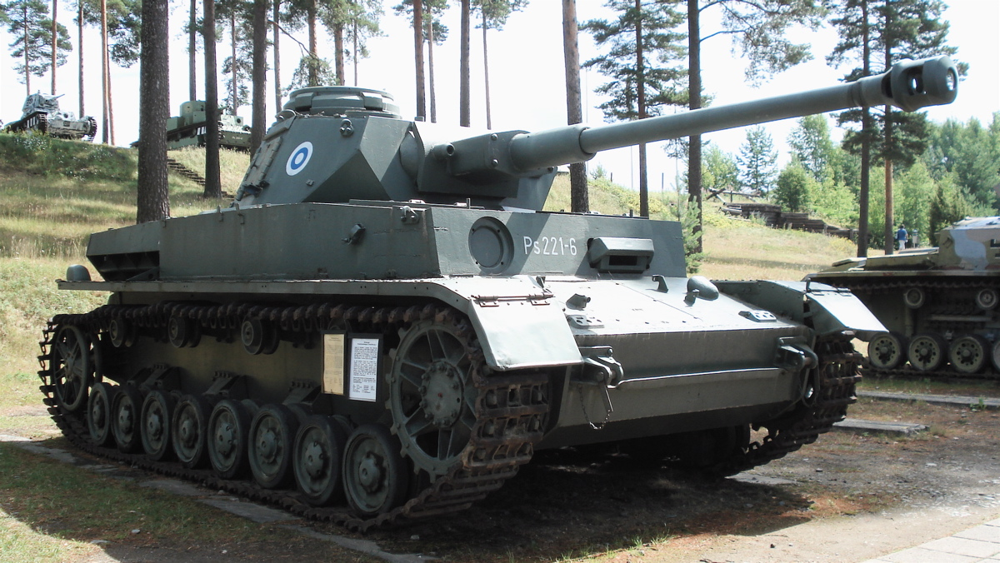

The Panzer IV ausf. A began production in 1936
The Panzer IV ausf. C began production in 1938 and completely replaced the ausf. B.
The Panzer IV ausf. F2 began production in 1942 and contained a larger armament to deal with the T-34 and KV tanks of the Soviet Union.
The Panzer IV ausf. H began production in 1943 and supported a larger armament, and skirt armor for additional protection.
The Panzer Iv ausf. J began production in 1944 and was a greatly simplified design of the previous model. It no longer had the skirt armor of the H, and was incredibly simplified so it could be cheaper and replace heavy losses that the Germans had at this point of the war.
